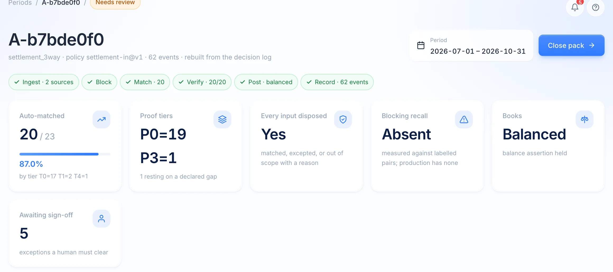
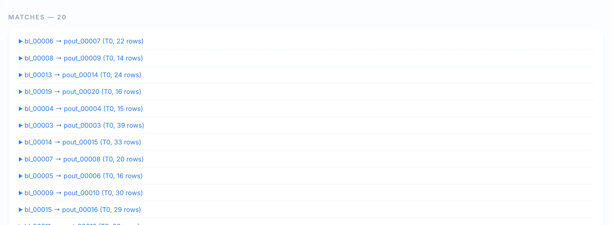
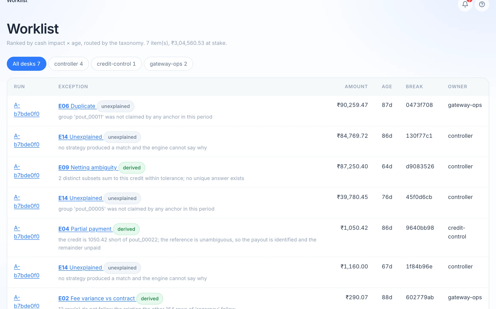
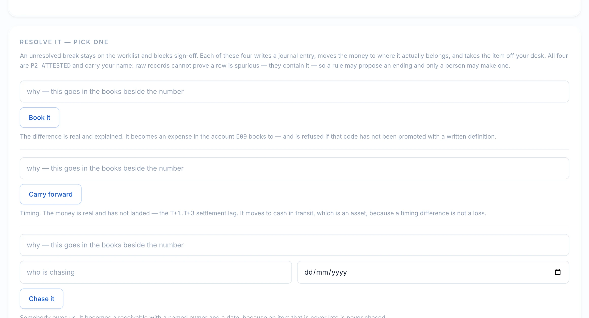
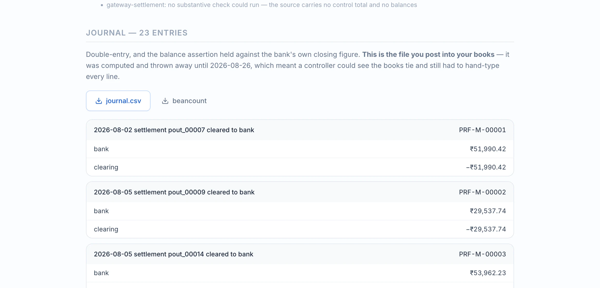
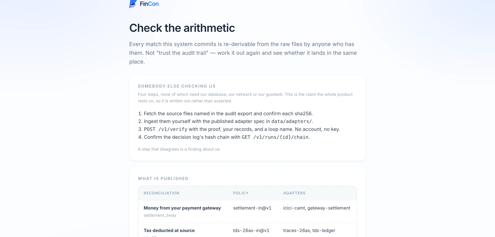

The three-way match
Bank statement, gateway settlement and your register, tied row by row. Exact, tolerant, subset-sum for the N:1 payouts, and a declared tier for a short payment nobody should absorb silently.

FinCon reconciles what your payment gateway says it paid out against what the bank actually received, writes the double entry, and hands back what is left — ranked, priced and routed to a desk. Every match carries arithmetic an auditor re-derives without us.
Reconciliation software already matches 90–99% of your transactions. That problem is solved.
Nobody solved what happens to the rest.
What one close produces
Bank statement, gateway settlement and your register, tied row by row. Exact, tolerant, subset-sum for the N:1 payouts, and a declared tier for a short payment nobody should absorb silently.

Not a confidence score. Both sides’ record ids, the residual closing to zero, the tolerance consumed, the rule that fired. A match without a passing proof does not appear in the match count.

What did not match arrives named, valued and routed to a desk — ordered by cash impact × age. A worklist, not a queue.

Book it, carry it forward, chase it, or write it off. Each writes double entry, moves the money where it belongs, and takes the item off your desk under your name.

Balanced double entry, asserted against the bank’s own closing figure, downloadable as CSV or beancount — and the beancount file is re-loaded by beancount itself.

Hand an auditor the log and the source files. They re-derive every match on a public endpoint that needs no account and touches none of our state.

No integration project. It reads the files your bank and your gateway already give you.
The receipts
Every card below came out of a real run on the sample batch. Nothing here is a mock-up, and nothing is a quote we wrote for somebody.
bl_00006 → pout_00007 tier T0 22 rows residual 0.00 tolerance used 0.00 / 0.50 verdict PROVEN provenance P0 ARITHMETIC
E09 Netting ambiguity ₹87,250.40 2 distinct subsets sum to this credit within tolerance subset of 4 … subset of 4 … no unique answer exists
E02 Fee variance ₹290.07
12 row(s) do not follow the
relation the other 164 rows
of 'razorpay' follow
— found with no contract on file
E14 Unexplained ₹84,769.72
no strategy produced a match
and the engine cannot say why
4 of 7 items in this close
R-DUP-06 induced by the model when side eq "settlement" and keys.row_type eq "fee" and key_occurrence gt "0" then raise_advisory → E06 0 broken · 0 added A 1/517 · B 1/536
five receipts, scroll
Every figure decomposed.
Nothing rounded away.
From two files to a signed pack an auditor can check without calling you. About 191ms of compute on the sample batch, and then the only thing left is the judgement that was always yours.
Why FinCon
A reconciliation you cannot check is a reconciliation you cannot defend. Every claim below is enforced by a test that fails when it is violated — otherwise it is a preference, not a control.
Every accepted match re-derives from raw records. A match without a passing proof is not counted. Match rates ship with their tier split, because a headline number alone is gameable — and gameable is indistinguishable from false.
Where two answers both fit the arithmetic, it returns the ambiguity rather than picking. Where nothing fits, it says so and hands you the evidence. Four of seven items in a real close are “I cannot say why”, and that number is printed rather than smoothed.
A resolution becomes a rule, regression-tested against every historical match and approved by name. The system gets more deterministic over time, not more agentic — which is the opposite of how agent products usually age.
A second reconciliation — Form 26AS from the Income Tax Department against a TDS ledger — runs on the same engine with zero changes to it, asserted byte-for-byte. A generality that needed a change for its second instance was never a generality.
Sample data loads with one button. No card, no sales call, no configuration.